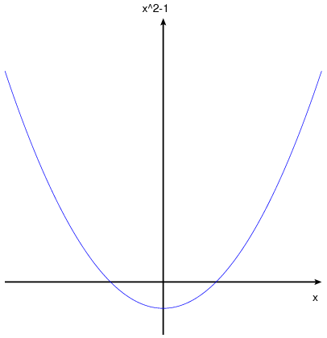

plot, plot_1, …, plot_n sind Ausdrücke, Namen von
Funktionen oder Listen, mit denen diskrete Punkte oder Funktionen in einer
parametrischen Darstellung angegeben werden. Diskrete Punkte können als
[discrete, [x1, ..., xn], [y1, ..., yn]] oder als
[discrete, [[x1, y1], ..., [xn, ..., yn]]
angegeben werden. Eine parametrische Darstellung hat die Form
[parametric, x_expr, y_expr, t_range].
Die Funktion plot2d zeichnet einen zweidimensionalen Graphen einer oder
mehrerer Ausdrücke als Funktion einer Variablen oder eines Parameters. Mit
der Grafikoption x_range wird der Name der unabhängigen Variablen und
deren Bereich angegeben. Die Syntax der Grafikoption x_range ist:
[variable, min, max].
Ein diskreter Graph wird durch eine Liste definiert, die mit dem
Schlüsselwort disrecte beginnt. Es folgen ein oder zwei Listen mit
den Werten. Werden zwei Listen übergeben, müssen diese dieselbe Länge
haben. Die Daten der ersten Listen werden als die x-Koordinaten der Punkte und
die der zweiten als die y-Koordinaten der Punkte interpretiert. Wird nur eine
Liste übergeben, sind die Elemente Listen mit je zwei Elementen, die die x-
und y-Koordinaten der Punkte repräsentieren.
Ein parametrischer Graph wird durch eine Liste definiert, die mit dem
Schlüsselwort parametric beginnt. Es folgen zwei Ausdrücke oder
Namen von Funktionen und ein Parameter. Der Bereich für den Parameter muss
eine Liste sein, die den Namen des Parameters, seinen größten und seinen
kleinsten Wert enthält: [parameter, min, max]. Der
Graph ist der Weg für die zwei Ausdrücke oder Namen von Funktionen, wenn
der Parameter parameter von min nach max zunimmt.
Als optionales Argument kann ein Wertebereich für die vertikale
Koordinatenachse mit der Grafikoption y angegeben werden:
[y, min, max]. Die vertikale Achse wird immer mit dem
Schlüsselwort y bezeichnet. Wird kein Wertebereich y angegeben,
wird dieser durch den größten und kleinsten y-Wert des zu
zeichnenden Graphen festgelegt.
Auch alle anderen Grafikoptionen werden als Listen angegeben, die mit einem
Schlüsselwort beginnen, auf das die Parameter der Grafikoption folgen. Siehe
plot_options.
Werden mehrere Graphen gezeichnet, wird eine Legende hinzugefügt, die die
einzelnen Graphen unterscheidet. Mit der Grafikoption legend können die
Bezeichnungen für die Legende festgelegt werden. Wird diese Option nicht
genutzt, generiert Maxima die Bezeichnungen der Legende aus den Ausdrücken
oder Namen der Funktionen, die als Argument übergeben wurden.
Siehe auch das Kapitel Grafikoptionen.
Beispiele:
Graph einer einfachen Funktion.
(%i1) plot2d (sin(x), [x, -%pi, %pi])$
Wächst die Funktion sehr schnell, kann es notwendig sein, die Werte auf der
vertikalen Achse mit der Grafikoption y zu begrenzen.
(%i1) plot2d (sec(x), [x, -2, 2], [y, -20, 20])$
plot2d: some values were clipped.
Die Ansicht eines Graphen kann sich für verschiedene Grafikprogramme
unterscheiden. In Xmaxima bewirkt die Grafikoption [box, false], das die
Koordinatenachsen mit Pfeilen dargestellt werden.
(%i1) plot2d ( x^2-1, [x, -3, 3], [y, -2, 10],
[box, false],
[plot_format, xmaxima])$

Ein Graph mit einer logarithmischen Skala:
(%i1) plot2d (exp(3*s), [s, -2, 2], [logy])$
Graphen von Funktionen, deren Namen als Argumente übergeben werden.
(%i1) F(x) := x^2 $
(%i2) :lisp (defun |$g| (x) (m* x x x))
$g
(%i2) H(x) := if x < 0 then x^4 - 1 else 1 - x^5 $
(%i3) plot2d ([F, G, H], [u, -1, 1], [y, -1.5, 1.5])$
Graph einer parametrisch definierten Schmetterlingskurve.
(%i1) r: (exp(cos(t))-2*cos(4*t)-sin(t/12)^5)$
(%i2) plot2d([parametric, r*sin(t), r*cos(t), [t, -8*%pi, 8*%pi],
[nticks, 2000]])$
Ein parametrischer Kreis mit zwei vollständigen Drehungen, der nur für 7
Punkte gezeichnet ist.
(%i1) plot2d ([parametric, cos(t), sin(t), [t, -2*%pi, 2*%pi],
[nticks, 8]])$
Graph der Funktion abs(x) und eines parametrischen Kreises. Das
Seitenverhältnis der Grafik wurde mit den Grafikoptionen x und y
so angepasst, dass der Kreis rund erscheint. Das hier gewählte
Seitenverhältnis funktioniert gut für die Ausgabe im Postscript-Format.
(%i1) plot2d([[parametric, cos(t), sin(t) ,[t,0,2*%pi],
[nticks, 80]], abs(x)], [x,-2,2], [y, -1.5, 1.5])$
plot2d: some values were clipped.
Graph für diskrete Punkte. Die Punkte sind in zwei separaten Listen jeweils
für die x- und y-Koordinaten angegeben. Standardmäßig werden die Punkte
mit einer Linie verbunden.
(%i1) plot2d([discrete, [10, 20, 30, 40, 50],
[.6, .9, 1.1, 1.3, 1.4]])$
Dieselben Punkte des letzten Beispiels. Jeder Punkt wird einzeln in eine Liste
eingetragen und die Punkte werden nicht miteinander verbunden.
(%i1) plot2d([discrete, [[10, .6], [20, .9], [30, 1.1],
[40, 1.3], [50, 1.4]]],
[style, points])$
In diesem Beispiel wird eine Tabelle mit drei Spalten in eine Datei
data.txt gespeichert. Die Datei wird gelesen und die zweite und dritte
Spalte werden gezeichnet.
(%i1) with_stdout ("data.txt",
for x:0 thru 10 do print (x, x^2, x^3))$
(%i2) data: read_matrix ("data.txt")$
(%i3) plot2d ([discrete, transpose(data)[2], transpose(data)[3]],
[style,points], [point_type,diamond], [color,red])$
Graph von experimentellen Datenpunkten zusammen mit einer theoretischen
Funktion, die die Daten beschreibt.
(%i1) xy: [[10, .6], [20, .9], [30, 1.1], [40, 1.3], [50, 1.4]]$
(%i2) plot2d([[discrete, xy], 2*%pi*sqrt(l/980)], [l,0,50],
[style, points, lines], [color, red, blue],
[point_type, asterisk], [legend, "experiment", "theory"],
[xlabel, "pendulum's length (cm)"],
[ylabel, "period (s)"])$